Project 1: Image Filtering and Hybrid Images
This project can be devided into two parts, image filtering and creating hybrid image. We realized image filtering in my_imfilter(). And then we generated hybrid images in reate_hybrid_image() from the aligned image pairs.
1. Image filtering
Image filtering is a method to change the pixel intensity or extract some information from images through moving a sliding window (or operator). In this part, we used a gaussian filter to blur image. In my_filter() function, firstly I create a pad for the input image through reflecting the image symmerticly. Then if the input image is a gray image, which has only one channel, I forloop its height and width by sliding the filter window to calculate each pixel's value. Each pixel's value is the sum of the product of each pixel of orignial image and the corresponding pixel of filter operator. If the input image is a RGB image, which has 3 channnels, I filtered each channel with the same method as gray image. Then I created a 3-dimension data as an output image.
Example of code with highlighting
The code of creating pad for input image is as below. I created reflections for images.
%Create pad image
pad_size = [int(np.floor(x/2)) for x in filter_size]
pad_image = np.lib.pad(image, ((pad_size[0],),(pad_size[1],),(0,)), 'symmetric')
The code of calculating each pixel's value after filtering is as below. I only present the method of filtering gray image, which has only one channel.
%Image filtering
if(image.shape[2] == 1):
for i in range(0, filtered_image.shape[0]):
for j in range(0, filtered_image.shape[1]):
window = pad_image[i:i+filter_size[0], j:j+filter_size[1]]
filtered_image[i][j] = np.sum(np.multiply(window, filter))
return filtered_image
Results in a table
In order to test my function's reliability, I used proj1_test_filtering.ipynb to filter cat.bmp. The results are as below.
|
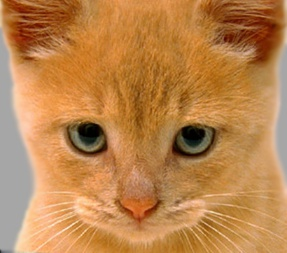
Input image |
Small blur with box filter |
Large blur with Gaussian filter |
|
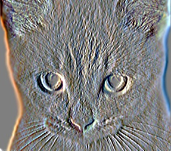
Sobel operator filter |

Discrete Laplacian filter |
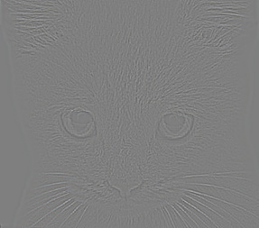
High-pass alternative for filter |
2. Creating hybrid images
Hybrid image is a combination of two images. One is filtered using low_pass filter with blur. The other is the results of original image minus blur image in space domain. What's more, since the provided function of visualizing hybrid image requires each pixel's value between 0 and 1, I used np.clip() function to normalize the value of each pixel. Based on this idea, we can write create_hybrid_image as below.
%Creating hybrid image
low_frequencies = my_imfilter(image1, filter)
high_frequencies = image2 - my_imfilter(image2, filter)
img = low_frequencies+high_frequencies
hybrid_image = np.clip(img, 0,1)
return low_frequencies, high_frequencies, hybrid_image
Results in a table
I created hybrid image for each pair of images provided, with cut-off_frequency=7. The results are as below.
|
Low frequency image for dog.bmp |
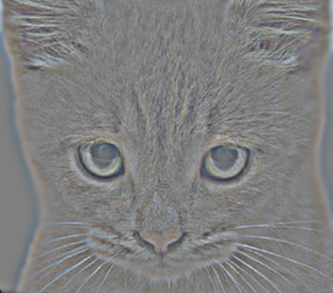
High frequency image for cat.bmp |

Cat and dog hybrid image |
|
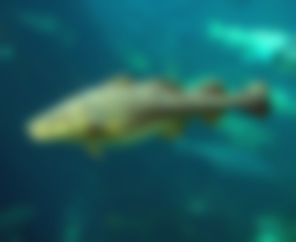
Low frequency image for fish.bmp |
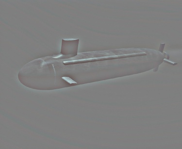
High frequency image for submarine.bmp |
Fish and submarine hybrid image |

Low frequency image for bird.bmp |

High frequency image for plane.bmp |

Bird and plane hybrid image |
|
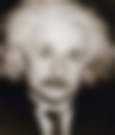
Low frequency image for einstein.bmp |

High frequency image for marilyn.bmp |

Einstein and Marilyn hybrid image |

Low frequency image for motorcycle.bmp |

High frequency image for bicycle.bmp |

Motor and bicycle hybrid image |
3. Further Experiments and Observations
a. Different cut-off frequency test
For cat and dog image pair, I tried different cut-off frequency and obtained different hybrid image as below.
|
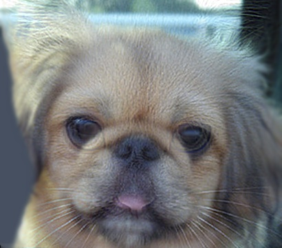
Cut-off frequency=2 |
Cut-off frequency=8 |
Cut-off frequency=14 |
We can find that the larger cut-off frequency for gaussian filter, the more details it will extract. With low cut-off frequency, less edge information of cat.bmp will be extracted, so the hybrid image is less like a cat. With high cut-off frequency, dog.bmp will be blured more detailedly, and more edge of cat.bmp will be extracted. Thus, the combination will be more like a cat.
b. Pad image with zeros VS reflection image
In previous code, I pad the original with reflection of image. Then I revised the code to pad images with zeros. The results of testing filtering motorcycle.bmp is as below.
The results of padding image with zeros are as below.
|
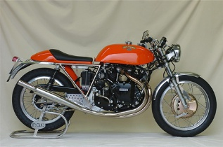
Input image |
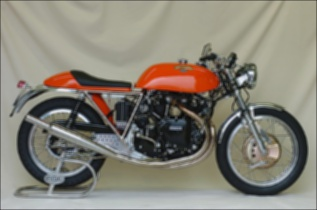
Small blur with box filter |
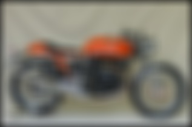
Large blur with Gaussian filter |
|
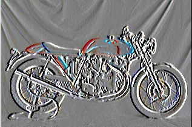
Sobel operator filter |
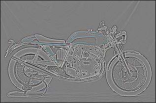
Discrete Laplacian filter |
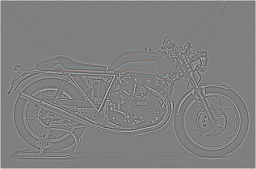
High-pass alternative for filter |
The results of padding image with reflection are as below.

Input image |
Small blur with box filter |
Large blur with Gaussian filter |
|
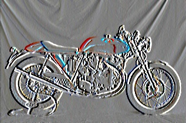
Sobel operator filter |
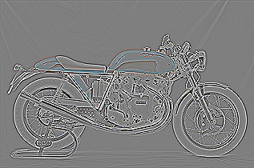
Discrete Laplacian filter |
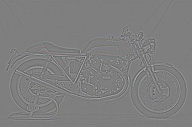
High-pass alternative for filter |
We can see that in Gaussian filter, the padding image with zeros has black edges, whose values are 0. While the padding image with reflection doesn't. In other filter operations, the results are similar. Thus, using reflection image to pad is better than using zeros in Gaussian filter.
c. Interchange images to create hybrid image
I also did the experiments of interchangeing image pairs to obtain different hybrid images. Using cat.bmp as the low pass image and dog.bmp as the high pass image, the result is as below.
|
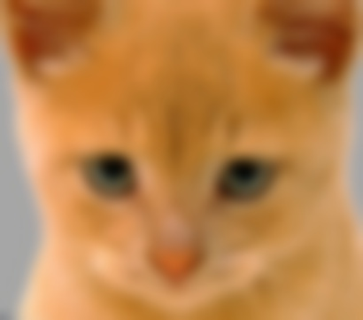
Low pass image |

High pass image |
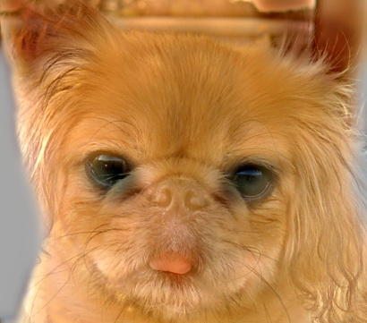
Dog and cat hybrid image |
We can find that the hybrid image is not much clear, since the contour of dog does not match the background of cat.
4. Conclusions
Through this project, I learned the basic knowledge of image filtering and implement it in python. Below as some conclusions drawn through this project.
1. Padding images with reflection will have better filtering results in edges while using big blur operators, like Gaussian filter.
2. Low cut-off frequency in Gaussian filter will have worse blur effect, with less running time. High cut-off frequency will extract more detail informations in high-pass image creation, but will cost more running time.
3. Hybrid image combines the background information of low-pass image and the edge information of high-pass image.